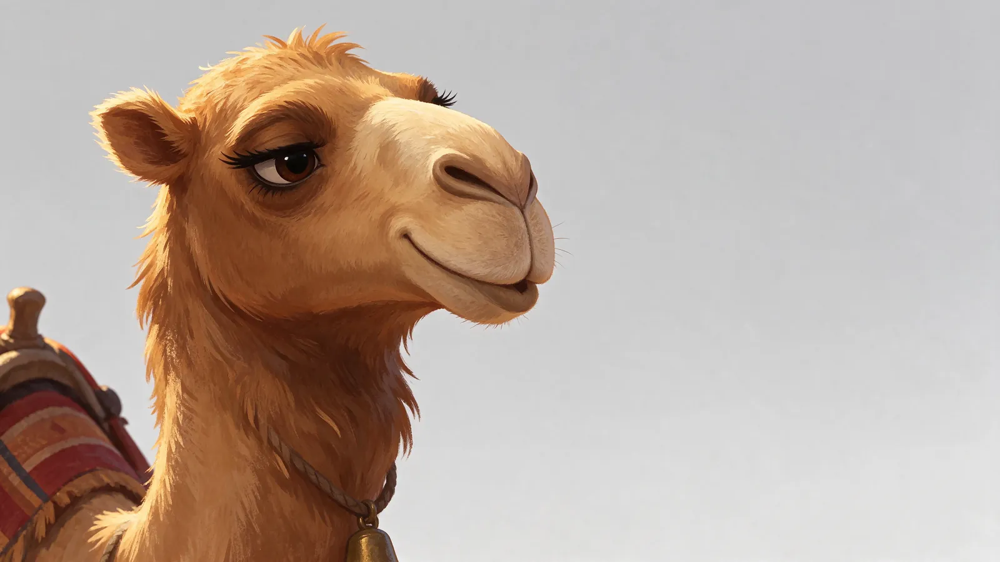

Den gamla kamelen Selma har burit berättelser genom öknen i tusentals år. Sätt dig ner och lyssna.
Femton frågor från alla kapitel. Fem av dem skriver du själv.

Selmas röst är gjord med ElevenLabs, musiken med Suno och bilderna med bildgeneratorer, efter Sagas religionsbok, kapitel 7–11.
Ljudeffekter:
Selma berättar vad berättelserna i Bibeln säger och vad människor tror. Det som står i boken kommer först. Det som är markerat ”Mer än boken” är extra.